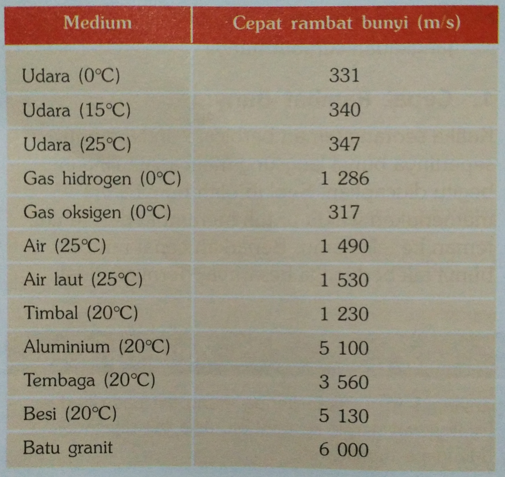

Zat Perantara Bunyi
Tahukah kalian jika bunyi itu termasuk ke dalam tipe gelombang longitudinal?
gelombang longitudinal merupakan jenis gelombang yang memerlukan medium untuk merambat. Medium atau zat ini dapat berupa zat cair, padat, maupun gas. Tentu saja cepat rambat bunyi pada masing-masing medium akan berbeda-beda. Coba perhatikan tabel di bawah ini!

Bagaimana? Terlihat jelas bukan perbedaan cepat rambat bunyi di setiap medium?
Studi Kasus
Coba perhatikan kembali tabel yang sudah disajikan di atas! Kesimpulan lain apakah yang dapat dikemukakan?